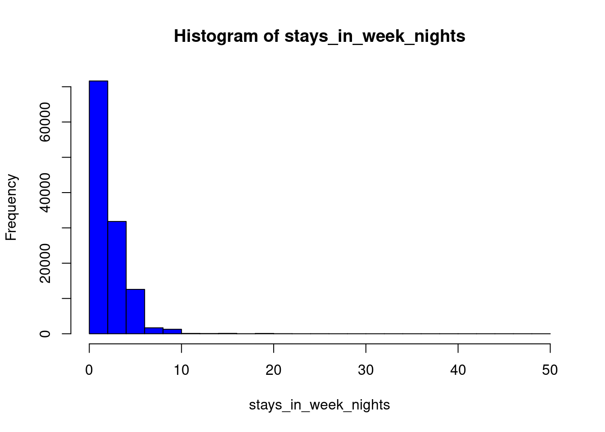

library(tidyverse)
library(ggplot2)
knitr::opts_chunk$set(echo = TRUE, warning=FALSE, message=FALSE)Challenge 9 Submission
challenge_9
Creating a function
Challenge Overview
Today’s challenge is simple. Create a function, and use it to perform a data analysis / cleaning / visualization task:
Examples of such functions are: 1) A function that reads in and cleans a dataset.
2) A function that computes summary statistics (e.g., computes the z score for a variable).
3) A function that plots a histogram.
That’s it!
Reusable Functions!
My goal here to create generic function templates that work with majority of the datasets. These functions can then be reused and modified based on specific requirements of the dataset.
# A function that reads in and cleans a dataset
read_and_clean_data <- function(file) {
data <- read.csv(file)
# Remove missing values
data <- na.omit(data)
return(data)
}
# A function that computes summary statistics
compute_summary_stats <- function(data, variable) {
# Get statistics for only numeric types
numeric_data <- select_if(data, is.numeric)
general_stats <- summary(numeric_data)
# Compute the mean and standard deviation separately for the Z-Score
mean_value <- mean(data[, variable])
std_value <- sd(data[, variable])
# Compute the z score for the variable
z_score <- (data[, variable] - mean_value) / std_value
# Return the z score
return(list(general_stats, z_score))
}
# A function that plots a histogram
plot_histogram <- function(data, variable) {
hist(as.numeric(data[, variable]), main = paste("Histogram of", variable), xlab = variable, col = "blue", breaks = "Sturges")
}Now that we have our templates ready, let’s try it on our dataset, the old faithful: hotel_bookings.
# Read and clean the data
data <- read_and_clean_data("_data/hotel_bookings.csv")
# As opposed to: data = read_csv("_data/hotel_bookings.csv")
# Compute the z score for a variable
summary_stats <- compute_summary_stats(data, "stays_in_week_nights")
summary_stats[1] # General stats[[1]]
is_canceled lead_time arrival_date_year arrival_date_week_number
Min. :0.0000 Min. : 0 Min. :2015 Min. : 1.00
1st Qu.:0.0000 1st Qu.: 18 1st Qu.:2016 1st Qu.:16.00
Median :0.0000 Median : 69 Median :2016 Median :28.00
Mean :0.3704 Mean :104 Mean :2016 Mean :27.16
3rd Qu.:1.0000 3rd Qu.:160 3rd Qu.:2017 3rd Qu.:38.00
Max. :1.0000 Max. :737 Max. :2017 Max. :53.00
arrival_date_day_of_month stays_in_weekend_nights stays_in_week_nights
Min. : 1.0 Min. : 0.0000 Min. : 0.0
1st Qu.: 8.0 1st Qu.: 0.0000 1st Qu.: 1.0
Median :16.0 Median : 1.0000 Median : 2.0
Mean :15.8 Mean : 0.9276 Mean : 2.5
3rd Qu.:23.0 3rd Qu.: 2.0000 3rd Qu.: 3.0
Max. :31.0 Max. :19.0000 Max. :50.0
adults children babies is_repeated_guest
Min. : 0.000 Min. : 0.0000 Min. : 0.000000 Min. :0.00000
1st Qu.: 2.000 1st Qu.: 0.0000 1st Qu.: 0.000000 1st Qu.:0.00000
Median : 2.000 Median : 0.0000 Median : 0.000000 Median :0.00000
Mean : 1.856 Mean : 0.1039 Mean : 0.007949 Mean :0.03191
3rd Qu.: 2.000 3rd Qu.: 0.0000 3rd Qu.: 0.000000 3rd Qu.:0.00000
Max. :55.000 Max. :10.0000 Max. :10.000000 Max. :1.00000
previous_cancellations previous_bookings_not_canceled booking_changes
Min. : 0.00000 Min. : 0.0000 Min. : 0.0000
1st Qu.: 0.00000 1st Qu.: 0.0000 1st Qu.: 0.0000
Median : 0.00000 Median : 0.0000 Median : 0.0000
Mean : 0.08712 Mean : 0.1371 Mean : 0.2211
3rd Qu.: 0.00000 3rd Qu.: 0.0000 3rd Qu.: 0.0000
Max. :26.00000 Max. :72.0000 Max. :21.0000
days_in_waiting_list adr required_car_parking_spaces
Min. : 0.000 Min. : -6.38 Min. :0.00000
1st Qu.: 0.000 1st Qu.: 69.29 1st Qu.:0.00000
Median : 0.000 Median : 94.59 Median :0.00000
Mean : 2.321 Mean : 101.83 Mean :0.06252
3rd Qu.: 0.000 3rd Qu.: 126.00 3rd Qu.:0.00000
Max. :391.000 Max. :5400.00 Max. :8.00000
total_of_special_requests
Min. :0.0000
1st Qu.:0.0000
Median :0.0000
Mean :0.5713
3rd Qu.:1.0000
Max. :5.0000 z_scores <- summary_stats[2]
# Plot the histogram of the variable
plot_histogram(data, "stays_in_week_nights")